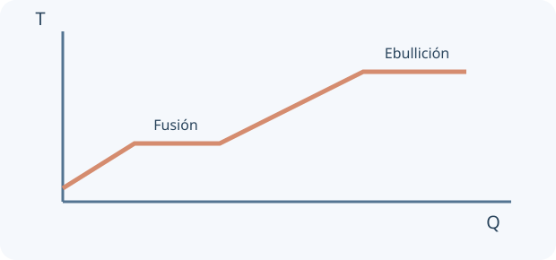

Una idea, un modelo y una experiencia para contrastarlo. Comprobá cada explicación y volvé a intentarlo cuando lo necesites.
0 de 4 lecciones comprobadasAvance guardado en este navegador
Contenidos y correspondencia con el programa
Termometría, escalas y equilibrio térmico
Calorimetría y calor específico
Cambios de estado y calor latente
Conducción, convección, radiación y balances térmicos
Normas OAF 2022, programa esquemático y contenidos conceptuales/procedimentales, pp. 14–16. Ver fuente y alcance.
01
COMPRENDÉ Y COMPROBÁ
Tu ruta de estudio.
LECCIÓN 1 / 4 · LEÉ, APLICÁ Y COMPROBÁ
Temperatura no es calor
Empezá desde la idea.
La temperatura describe un estado térmico; el calor es energía que se transfiere por una diferencia de temperatura. Dos cuerpos a igual temperatura pueden tener masas y energías internas muy distintas. Kelvin y Celsius usan escalas relacionadas, pero sus ceros tienen significados diferentes.

Curva cualitativa de calentamiento de una sustancia pura a presión fija: durante una transición de fase puede entrar energía sin subir T.
Temperatura caracteriza el estado térmico; calor es energía transferida por diferencia de temperatura. Al poner cuerpos en contacto, en condiciones habituales el calor fluye netamente del más caliente al más frío hasta equilibrio. Dos cuerpos a igual T pueden tener distinta energía interna.
Las diferencias en kelvin y Celsius tienen el mismo valor numérico: ΔT = 10 K equivale a un aumento de 10 °C. Las temperaturas absolutas no son iguales: 20 °C = 293,15 K. Los cocientes de gas y de eficiencia térmica requieren kelvin.
T(K) = t(°C) + 273,15 · t(°F) = 1,8t(°C) + 32
INTENTÁ RESOLVER ANTES DE MIRAR
Un termómetro pasa de 20 °C a 30 °C.
Tu desafío: Convertí ambas temperaturas y el cambio sin confundir escala con intervalo.
Ver el ejemplo resuelto paso a paso
Las temperaturas son 293,15 y 303,15 K.
El aumento es 10 K, no 283,15 K.
LECCIÓN 2 / 4 · LEÉ, APLICÁ Y COMPROBÁ
Calor específico y mezclas
Empezá desde la idea.
Para una misma sustancia sin cambio de estado, el aumento de temperatura depende de la energía recibida y de su masa. El calor específico expresa cuánta energía corresponde por unidad de masa y por grado. En una mezcla aislada, compará pérdidas y ganancias de energía.
Si no cambia el estado y c es aproximadamente constante, Q = mcΔT. El calor específico describe energía por masa y por cambio de temperatura. La capacidad calorífica C = mc corresponde al cuerpo completo.
En una mezcla ideal aislada sin reacción, sumá los calores con signo: lo perdido por una parte se gana en la otra. Incluí el calorímetro cuando sea relevante. El promedio simple de temperaturas solo vale con capacidades caloríficas iguales.
ΣQ = 0 · Tf = (m₁c₁T₁ + m₂c₂T₂)/(m₁c₁ + m₂c₂)
INTENTÁ RESOLVER ANTES DE MIRAR
Mezclás 100 g de agua a 20 °C y 300 g a 60 °C, sin pérdidas.
Tu desafío: Calculá Tf y justificá por qué queda más cerca de 60 °C.
Ver el ejemplo resuelto paso a paso
Tf = (100×20 + 300×60)/400.
Tf = 50 °C, no 40 °C.
LECCIÓN 3 / 4 · LEÉ, APLICÁ Y COMPROBÁ
Energía sin subir temperatura
Empezá desde la idea.
Durante un cambio de estado, la energía puede modificar la organización y las interacciones sin aumentar la temperatura de una sustancia pura a presión fija. Separá las etapas de calentamiento y cambio de fase antes de sumar energías.
Durante un cambio de fase de una sustancia pura a presión fija puede entrar o salir energía sin cambiar T. Esa energía modifica la organización e interacciones entre partículas, no aumenta simplemente la energía cinética media.
El calor latente específico se expresa en J/kg. Un problema con hielo que se calienta, funde y luego se calienta como agua se separa en tramos. Antes de suponer fusión completa, comprobá si la energía disponible alcanza.
Qfase = mL · Qtotal = suma de tramos mcΔT y mL
INTENTÁ RESOLVER ANTES DE MIRAR
Fundís 0,10 kg de hielo a 0 °C; Lf = 334000 J/kg.
Tu desafío: Calculá la energía y explicá por qué el agua no termina automáticamente por encima de 0 °C.
Ver el ejemplo resuelto paso a paso
Q = 0,10×334000.
Se necesitan 33400 J para obtener agua a 0 °C.
LECCIÓN 4 / 4 · LEÉ, APLICÁ Y COMPROBÁ
Tres caminos de transferencia
Empezá desde la idea.
Conducción, convección y radiación describen mecanismos distintos. La conducción no necesita transporte macroscópico de materia; la convección implica movimiento de fluido; la radiación transporta energía mediante ondas electromagnéticas y no necesita un medio material.
Conducción transmite energía mediante interacciones microscópicas sin transporte macroscópico de materia. Convección implica movimiento de un fluido. Radiación electromagnética puede transferir energía incluso en vacío.
Aislantes reducen ciertos mecanismos, no todos. Una superficie intercambia radiación en ambos sentidos; el flujo neto depende de su temperatura y la del entorno. Un balance real incluye pérdidas; no las atribuyas automáticamente a errores de medición.
Duplicás el espesor L de una pared, manteniendo todo lo demás.
Tu desafío: Predecí cómo cambia el flujo y nombrá qué condiciones se mantienen.
Ver el ejemplo resuelto paso a paso
En el modelo estacionario, el flujo conductor es inverso a L.
El calor por segundo se reduce a la mitad.
02
PREDECÍ · ARMÁ · MEDÍ · EXPLICÁ
La física en tus manos.
Preparando el laboratorio virtual…
03
LISTO PARA PONER A PRUEBA TU COMPRENSIÓN
Practicá, revisá y volvé a la idea.
Ocho preguntas por unidad, con áreas y niveles seleccionables. La autoevaluación avanza al guardar; al final podés revisar explicaciones y reintentar errores. Es práctica local, no un examen oficial ni un envío al panel docente.